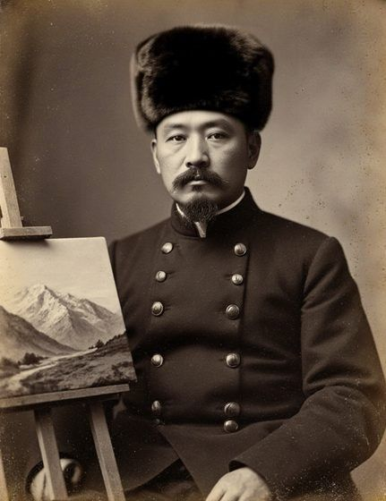

Ayyubov
House
Besh-Tash
Life

Yusup Ayyubov, 1905
- 1869Born in the upper Talas valley to a family of Christian herders; apprentice in the icon workshop of St Janyl.
- 1897Auditor at the Imperial Academy of Arts, St Petersburg, until 1903; takes the surname Ayyubov.
- 1904Builds the house at Besh-Tash.
- 1907First show, Tashkent; Verny follows in 1910.
- 1913Gives The White Rider Shows the Way to the cathedral.
- 1916Shelters the refugees of the uprising and draws their flight.
- 1917Chairs the National Council's commission on schools and culture.
- 1920Exile in Ghulja, Xinjiang, until 1925.
- 1926Teaches at Talas's first art studio, illustrates the Latin-script schoolbooks, paints banners and vestments in secret for Mar Timotheos Alimbekov.
- 1937Arrested in October; shot in Talas on 14 November. Grave unknown.
- 1957Rehabilitated.
- 1969The house opens as a memorial museum.
- 1992His religious works come out of hiding.
- 1999The road washes out; the museum closes.
- 2013Restored by the Körköm Foundation; reopened on 24 August.